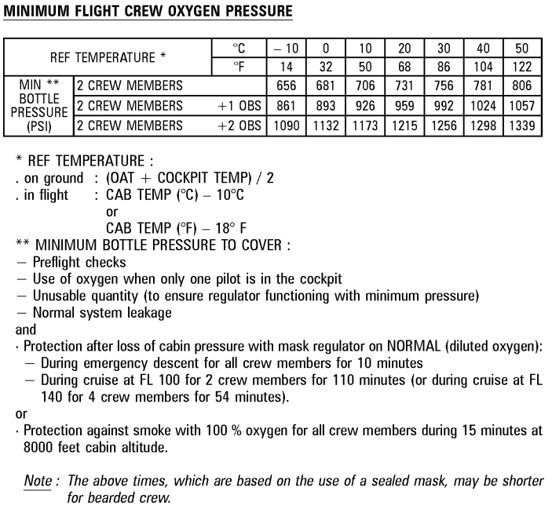

Charge for 20 minutes, with BATTERIES ON and EXT PWR ON.
Then check again: Batteries OFF then ON, and they should not drop from 25.5V (if so, call maintenance).
To LISTEN to a channel: Release knob, turn to adjust volume.
To TRANSMIT on a channel: Select transmission key.
PA transmission key is "hold to talk".
If someone is calling on a channel, the corresponding transmission key will light up. Press Reset to mute the buzzer and then select the corresponding transmission key to answer.
About the INT/RAD switch: RAD position enables PTT for any selected transmission keys. INT position enables a "always open" mic for the interphone (oxy masks, ground crew).
Do not perform fire test until Airbus power-up self-tests are done. Otherwise, aural warning will not be audible.
Assuming that GPU is available, it is recommended to delay APU start to save fuel.
But, if you need A/C and ACU is not available, (or GPU does not work) -> turn on APU MASTER, wait 3 seconds, then start APU and 2 minutes later turn on APU BLEED.
APU LIMITATIONS: Do not turn on APU from batteries if they are below 25.5V. Ask airport crew for a GPU. Do not turn on APU BLEED if HP Ground Unit is connected.
BEFORE WALKAROUND:
DOOR - check OXY PSI. If amber, check FCOM LIM-OXY Minimum Flight Crew Oxygen Pressure (see following screenshot):

HYD - check HYD QTY = If OAT +20ºC, fluid above normal is acceptable, else call maintenance.
ENG - check OIL QTY = should be at least 9.5 + 0.5 per flight hour (estimated consumption).
Use yellow pump to recharge.
ATTENTION! Yellow and green systems require ground crew clearance!
Confirm wheel chocks on position, then turn PARK BRK OFF.
Press the brake pedals while checking that PRESS builds symmetrically between 2000 and 2700 PSI, and decreases when pedals are released.
PARK BRK back on.
Life Jackets, Smoke Hoods, Gloves, Axe, Portable Fire Extinguisher, Oxygen Masks (goggles attached), Escape Ropes